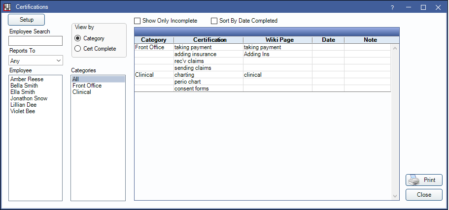
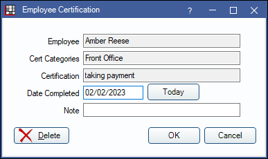

Certifications
Certifications are useful for tracking the progress of employee training.
In the Main Menu, click Tools, Certifications.
Setup: Click to access Certification Setup.
Show Only Incomplete: Check to only view certifications still needed by the selected employee.
Sort by Date Completed: Check to sort certifications by date completed.
Employee Search: Search for an employee by first name to filter the Employee List.
Report To: Filter employees by who they report to (e.g., lead, supervisor, etc.)
Employee: Lists all Employees in the practice. Highlight an employee to view certification progress.
Categories: Select one or more categories to filter certifications by.
View By:
- Categories: View certifications by category. Displays the certification list as show above.
- Cert Complete: View completed certifications by category and certification. Displays as shown below.

Print: Print the certifications list. Must be printed in landscape to view all columns.
Updating Certifications
To add the date completed to a certification, do the following:
- Ensure View by Category is selected.
- Highlight the employee who completed the certification.
- Double-click the certification from the grid on the right. The following window will open:
- Enter the Date Completed or click Today to enter today's date.
- Add any relevant notes about the certification.
- Click OK to complete.
To delete a certification for an employee, double-click the certification from the grid, then click Delete.